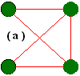
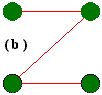
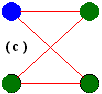
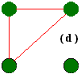
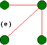

| Grafos não
orientados são aqueles que não possuiem uma orientação
através de setas. Vários tipos de grafos não dirigidos
são mostrados abaixo. Dois vértices no grafos não
dirigido são chamados adjacentes
se existe uma extremidade do primeiro para o segundo. Portanto, no grafo
( a ), os vértices 1 e 2 são adjacentes, como 3 e 4, mas
1 e 4 não são adjacentes. Uma caminho
é uma seqüência de vértices distintos, cada um
adjacente com o próximo. O grafo ( b ) mostra uma caminho. Um circulo
é uma caminho contendo no mínimo três vértices
tais que o último vértice no caminho é adjacente com
o primeiro. O grafo ( c ) mostra um círculo. Um grafo é dito
conectado
se existe um caminho de algum vértice; parte (
a ), ( b ) e ( c ) mostram grafos conectados, e ( d ) mostra um grafo disconectado,
com o vértice c livre.
O Grafo ( e ) da figura abaixo mostra um grafo conectado sem círculos. Você notará que este grafo é, de fato, uma árvore, e pegamos esta propriedade como definição: Uma árvore livre é definida como um grafo não orientado conectado sem círculos. Agora vejamos alguns exemplos do mundo real: |
|   
  |